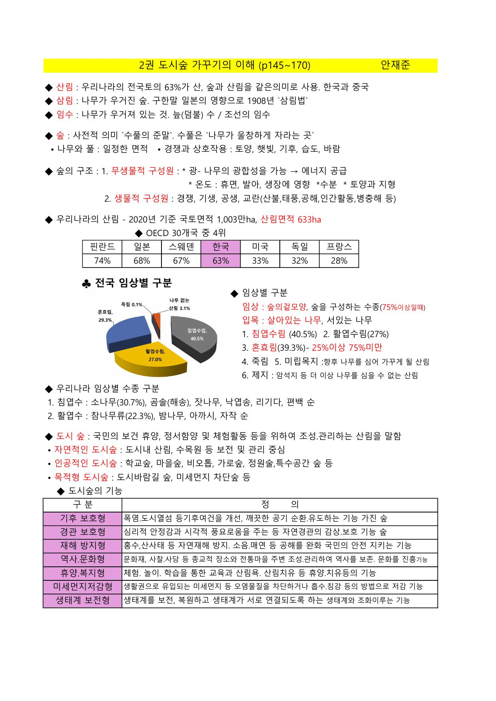
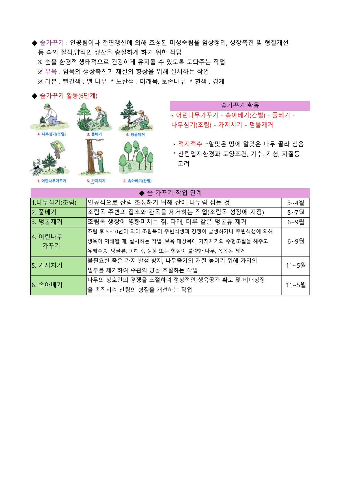
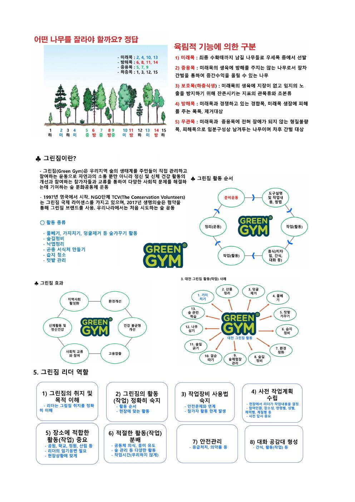
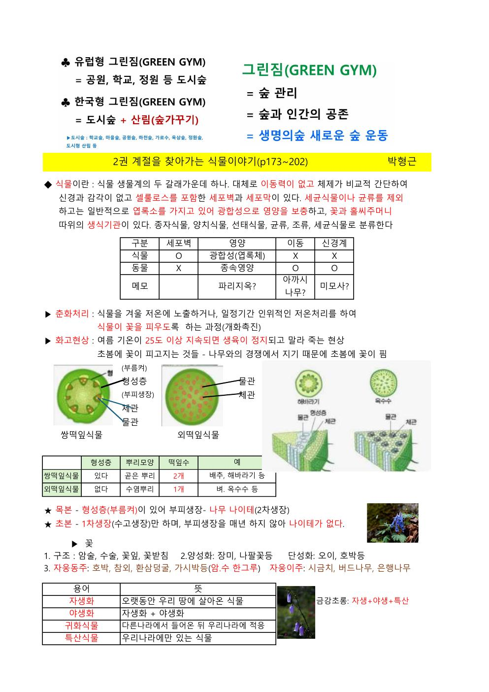

강사는 숲 공부를 시작하는 방법으로, 멀리 있는 숲보다 집 앞 마을숲부터 시작할 것을 강조했다. 아파트나 주택 앞마당에 있는 나무 이름도 모르면서 깊은 산으로 갈 필요가 없다는 것이다.
대전의 경우 2003년도에 숲해설가 양성과정을 시작했는데, 초기에는 아파트 주민을 대상으로 매주 토요일 오전에 마을 안 나무 이름 공부를 시켰다. 처음에는 5명이 모이다가 나중에는 40~50명까지 모였다.
실제로 수업을 가장 많이 하는 장소는 학교 숲이고, 그 다음이 도시숲이다. 요즘은 안전 문제로 산에서 수업하기가 쉽지 않아졌다.
| 용어 | 설명 |
|---|---|
| 산림(山林) | 우리나라·중국에서 사용. 국토의 약 63% 차지. 우리나라 공식 표현 |
| 삼림(森林) | 일본식 한자어. 구한말 일본 영향으로 1908년 '삼림법' 제정 당시 사용됨. 현재는 거의 안 씀. |
| 임수(林藪) | 나무가 우거져 있는 것. 늪(덤불)·조선의 임수 등 과거 표현. |
공유림 = 전주시 같은 공공체 소유. 국유림 30% 이상 유지 목표 → 최근 국유림 확대 추진 중.
임상(林相)이란 숲의 모양을 말한다. 침엽수림인지, 활엽수림인지, 혼효림인지를 가리킨다.
| 임상 | 기준 |
|---|---|
| 침엽수림(침엽순림) | 침엽수가 75% 이상 |
| 활엽수림(활엽순림) | 활엽수가 75% 이상 |
| 혼효림 | 어느 한 수종이 25% 이상 75% 미만 |
임목(立木): 산 안에 개별적으로 서 있는 나무. 임상·임목 두 용어 필수 숙지.
나무의 나이를 10년 단위로 묶은 것. 연륜까지 포함하는 개념.
자기 땅의 나무라도 함부로 벨 수 없음. 벌기령은 법적으로 정해져 있음.
최근 산주들이 가장 심어달라는 나무 1위: 편백. 중부지방에서 기상이변 시 타격 위험. 단순림(한 수종만)은 지양하고 있으나 현장에서는 아직 편백 조림이 많다.
| 구분 | 기준 | 예시 |
|---|---|---|
| 교목 | 5m 이상 높이 자라는 나무 | 소나무류, 참나무류, 서어나무류 |
| 아교목 | 2~5m 높이의 나무 | 중간 키 나무 |
| 관목 | 2m 이하 낮게 자라는 나무 | 영산홍, 진달래, 국수나무, 싸리 |
| 수종 | 국유림 | 공·사유림 |
|---|---|---|
| 소나무 | 60년 | 40년 |
| 잣나무 | 60년 | 50년 |
| 리기다소나무 | 30년 | 25년 |
| 낙엽송 | 50년 | 30년 |
| 삼나무 | 50년 | 30년 |
| 편백 | 60년 | 40년 |
| 참나무류 | 60년 | 25년 |
| 포플러류 | 3년 | 3년 |
| 구분 | 특징 | 대표 수종 |
|---|---|---|
| 양수 | 햇빛을 좋아함 (그늘 못 버팀) | 소나무 (극단적 양수) |
| 음수 | 그늘에서도 잘 자람 | — |
| 중용수 | 양지·음지 모두 잘 자람 | 삼나무 |
하천변·연못 주변 대표 수종: 버드나무류. 물을 너무 좋아해 연못 주변·하천 주변에 주로 분포.
| 위치 | 적합 수종 |
|---|---|
| 양지바른 곳 | 소나무, 참나무류, 박달나무, 팥배나무, 쇠물푸레나무, 진달래, 철쭉, 노간주, 싸리, 산초나무 등 |
| 그늘진 곳 | 참나무류, 서어나무, 당단풍나무, 산딸나무, 산벚나무, 때죽나무, 물푸레나무, 쪽동백, 국수나무, 회양목, 생강나무 등 |
| 습한 곳 | 느티나무, 오리나무, 층층나무, 고로쇠나무, 야광나무, 느릅나무, 산목련, 쥐똥나무, 고추나무, 조팝나무류, 찔레꽃, 고광나무 등 |
| 연못 주변 | 버드나무, 왕버들, 갯버들, 보리수나무, 콩배나무, 돌배나무, 붉나무 등 |
| 구분 | 설명 |
|---|---|
| 교림(喬林) | 대부분 키 큰 나무로 이루어진 숲 |
| 중림(中林) | 교목과 왜목이 섞인 숲 (의도적으로 작은 교수를 만든 것) |
| 왜림(矮林) | 키 작은 나무가 많은 숲 |
우리나라에는 원시림·자연림이 거의 없음. 천연림과 인공림 두 가지만 있다고 보면 됨.
좋은 나무 사이에서 방해가 되는 나무. 대표적 악연목: 동백, 단풍나무, 박태기나무
은행나무는 침엽수가 아님. 일부 학자들은 활엽수 분류 주장. 일반적으로는 침엽수로 분류. 잎이 부채 모양인 독특한 수종.
| 구분 | 요소 |
|---|---|
| 비생물적 구성원 | 광(빛) · 온도 · 수분 · 토양과 지형 |
| 생물적 구성원 | 경쟁 · 기생 · 공생 · 교란(산불, 태풍, 공해, 인간활동, 냉해 등) |
2020년에 「도시숲 등의 조성 및 관리에 관한 법률」 제정·시행
도시숲의 법적 정의: "도시에서 국민의 보건·휴양 및 정서 함양을 위해 조성·관리하는 산림 및 수목"
학교숲, 가로수, 마을숲, 도시공원, 도시정원 등. 최근 도시정원이 급부상 — 시민정원사 수요 증가.
| 분류 | 예시 | 특징 |
|---|---|---|
| 자연적인 도시숲 | 도시 내 산림, 수목원 등 | 보전·관리 중심 |
| 인공적인 도시숲 | 학교숲, 마을숲, 비오톱, 가로숲, 특수공간숲 등 | 조성·관리 중심 |
| 목적형 도시숲 | 도시 바람길 숲, 미세먼지 차단 숲 등 | 특정 환경문제 해결 목적 |
→ 최근: 휴양·생활환경·생태계 보전 쪽으로 확대 중
| 유형 | 기능 |
|---|---|
| 기후보호형 | 폭염·도시열섬 완화, 깨끗한 공기 순환·유도 |
| 경관보호형 | 심리적 안정감과 시각적 풍요로움 제공 |
| 재해방지형 | 홍수·산사태 등 자연재해 방지, 소음·매연 등 공해 완화 |
| 역사·문화형 | 문화재·사찰·전통마을 주변 조성·관리로 역사와 문화 보존 |
| 휴양·복지형 | 체험·놀이·학습, 삼림욕·산림치유 등 휴양 기능 |
| 미세먼지 저감형 | 미세먼지 등 오염물질 차단·흡수·침강 |
| 생태계 보전형 | 생태계 보전·복원 및 생태축 연결 |
공기정화 능력이 좋지만 좁은 공간에 심으면 문제 발생:
영국 거리 가로수 대부분이 플라타너스. 생육 공간을 넓게 확보하고, 상가에서 자기 앞 나무를 직접 관리. 우리나라에서도 벤치마킹 필요.
예전에 마을 공동체의 문화와 경계를 지키는 역할을 했다. 광죽(대나무숲)이나 당산목 형태로 존재했다.
생명의 숲에서 아름다운 마을숲을 찾아 지키고 보존하는 활동 중. 대표 사례: 포항 덕동마을숲, 강릉의 마을숲, 진도 중리마을숲 등.
숲이 건강하게 성장할 수 있도록 가꾸는 작업. 햇빛이 들어올 수 없거나 방해가 되는 나무들을 솎아내어 건강한 숲을 만드는 과정.
| 단계 | 나무 수령 | 내용 |
|---|---|---|
| 풀베기 | 1~5년생 | 가장 어린 나무 주변 잡초 제거 |
| 어린나무가꾸기 | 5~10년생 | — |
| 가지치기·솎아베기 | 10년 이상 | 본격적인 나무 관리 |
| 구분 | 내용 |
|---|---|
| 천이 | 식물 군락과 구성 종이 시간의 흐름에 따라 변해 가는 현상 |
| 1차 천이 | 암석 풍화와 토양 형성 이후 생태계가 새로 형성되는 과정 |
| 2차 천이 | 기존 생태계가 산불 등으로 파괴된 뒤 다시 형성되는 과정 |
| 극상림 | 기후 조건에 가장 적합한 안정 상태에 이른 숲 |
| 교란 | 기존 생태계를 파괴하거나 해치는 외부 요인. 산불, 동물, 곤충, 벌채, 이상기온, 인공조림 등이 해당 |
지형이 험해 기계가 들어가지 못하는 곳이 많다. 선진국(평탄한 지형)과 달리 대부분 사람이 기계톱을 들고 올라가서 작업 → 인건비 상승 → 목재 생산 단가 높아짐.
| 구분 | 의미 |
|---|---|
| 미래목 | 앞으로 키워야 할 우량목 |
| 방해목 | 미래목의 생장을 방해해 제거 대상이 되는 나무 |
| 중용목 | 상황에 따라 보존하거나 제거할 수 있는 중간 성격의 나무 |
| 하층목 | 아래층에서 자라는 낮은 나무 |
| 용어 | 설명 |
|---|---|
| 수고(樹高) | 나무 전체 높이 (땅에서 꼭대기까지) |
| 수관폭 | 나뭇잎(수관)의 가로 폭 |
| 수관고 | 수관이 시작되는 높이 ~ 꼭대기까지 |
| 지하고(枝下高) | 첫 번째 가지부터 지면까지의 높이 (목재로 쓸 수 있는 부분) |
| 흉고직경 | 가슴 높이(1.2m)에서 측정한 나무 직경. 무조건 짝수로만 측정. 예: 23cm → 24cm |
| 근원직경 | 땅 바로 위에서 측정한 나무 직경 (기울어진 나무에 활용) |
흉고직경 측정 도구: 윤척(직경자). 홀수 나오면 올림해서 짝수로 기록.
지하고: 첫 번째 가지~지면. 이 부분이 클수록 좋은 목재를 많이 얻을 수 있음.
나무심기, 숲가꾸기, 풀베기, 가지치기, 솎아베기, 텃밭 관리 등. 활동 중 간식 나눔 + 대화 → 커뮤니티 형성.
상호 인사 → 준비운동 → 작업 방법 및 도구 설명 → 작업 내용 설명 → 활동 → 중간 휴식(간식·티타임) → 활동 → 정리운동
| 활동 종류 | 주요 내용 | 활동 효과 |
|---|---|---|
| 숲가꾸기 활동 | 가지치기, 덩굴 제거, 숲길 정비, 낙엽 정리 | 공동작업을 통해 단체활동과 대화를 촉진하고, 가족 및 다양한 계층이 함께 참여할 수 있음 |
| 생태 보호 활동 | 동물 서식처 보호, 습지 보호 및 청소 | 생활 주변 환경보전에 기여하고, 지역 숲의 생태계를 주민이 직접 관리하는 경험 제공 |
| 시설·장비 관리 | 숲체험장 및 장비 보수·정리, 다양한 환경보전·정화 활동 | 전신을 움직이는 활동으로 신체 운동성을 높이고, 햇빛 노출을 통해 세로토닌·도파민 발생을 유도 |
중학교 아들과 1년 동안 대화가 없던 아버지가 그린짐을 통해 처음으로 대화를 나눈 사례. 가족 간 단절된 관계 회복에 도움.
리더 배치 비율: 참여자 5명당 리더 1명으로 안전 관리.
그린짐 리더는 숲해설가 양성과정을 수료한 사람이 별도 교육을 통해 양성되며, 활동을 함께 진행하면서 안전과 작업 흐름을 관리한다.
그린짐은 활동 장소를 먼저 정하고 참가자를 모집한다. 정부·지자체 제공 장소나 협약 장소가 안정적이며, 사유지는 한계가 있다. 학교는 스쿨 그린짐으로 운영하기 좋고, 주변 학교가 많을수록 유리하다.
솔잎이 쌓이면 소나무 뿌리가 숨을 못 쉼. 솔잎을 긁어줘야 토양 균이 살고 소나무가 건강하게 자람. "덮어 있어야 비료가 된다"는 생각과 반대 — 오히려 썩어서 균형이 깨질 수 있음.
그린짐 활동에서 이런 설명을 함께 붙이면 참여자들이 작업 이유를 이해하고 흥미를 느끼기 좋다.
도시숲 가꾸기의 이해 과목 중 도시숲, 숲가꾸기, 그린짐 관련 원문 4장을 함께 확인할 수 있도록 첨부했다.




정리 기준: 기존 정리본에 이미 포함된 내용은 중복 삽입하지 않고, 새로 확인되는 세부 내용만 아래에 따로 정리했습니다.
과목별 추가 확인 내용을 기존 정리본 원문과 구분해 보강 자료로 정리했습니다.